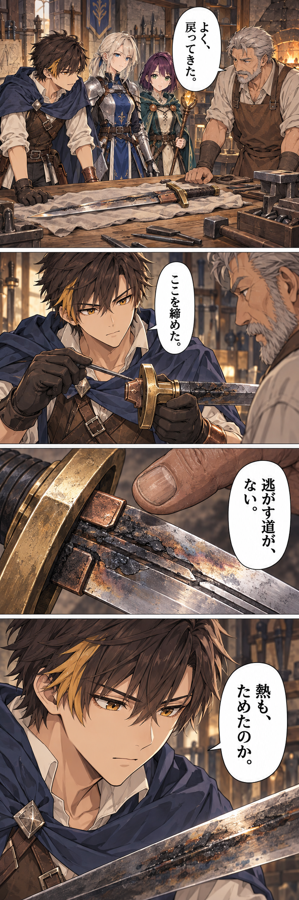
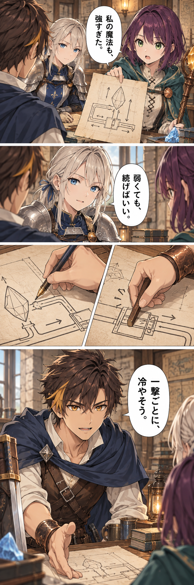
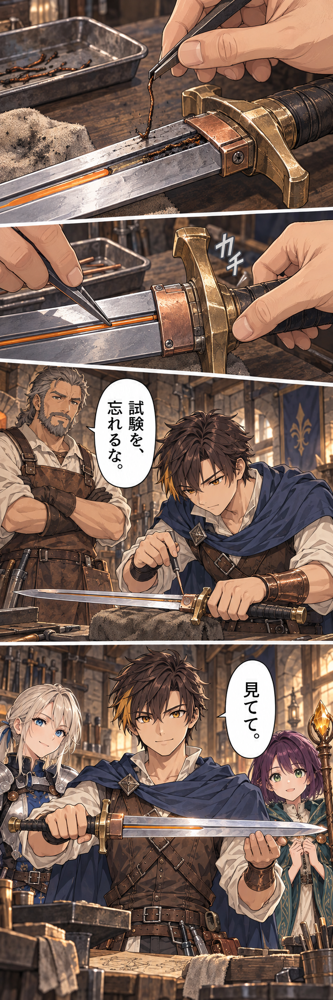
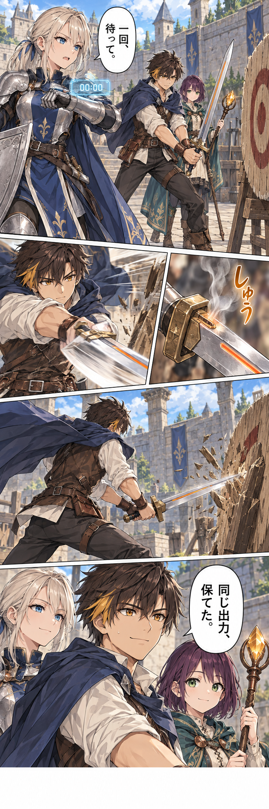

<!doctype html><html lang="ja"><meta charset="utf-8"><meta name="viewport" content="width=device-width,initial-scale=1"><title>塔を灯す剣｜第5話</title><style>*{box-sizing:border-box}html{color-scheme:light}body{margin:0;background:#e5e9ee;color:#273347;font-family:-apple-system,BlinkMacSystemFont,"Hiragino Kaku Gothic ProN",sans-serif}main{width:100%;max-width:640px;margin:auto;background:white;container-type:inline-size}header{padding:42px 22px 32px;text-align:center;background:#fff}header a,footer a{color:#365178;text-decoration:none;font-size:16px}header p{font-size:16px;margin:24px 0 10px;letter-spacing:.12em}h1{font-size:28px;line-height:1.5;margin:0}figure{margin:0}figure img{display:block;width:100%;height:auto}.gap{height:var(--gap);background:white}footer{padding:45px 24px;text-align:center;display:flex;gap:24px;justify-content:center}footer a{font-size:18px}a:focus-visible{outline:3px solid #d98238;outline-offset:4px}</style><main><header><a href="../chapters.html">話一覧</a><p>塔を灯す剣 · 第5話</p><h1>捨てない設計図</h1></header>
<figure id="scene-01"></figure>
<div class="gap" aria-hidden="true" style="--gap:15.385cqw"></div>
<figure id="scene-02"></figure>
<div class="gap" aria-hidden="true" style="--gap:17.949cqw"></div>
<figure id="scene-03"></figure>
<div class="gap" aria-hidden="true" style="--gap:15.385cqw"></div>
<figure id="scene-04"></figure>
<footer>
<a href="../episode-04/index.html">前の話</a>
<a href="../chapters.html">話一覧</a>
<a href="../episode-06/index.html">次の話</a>
</footer></main></html>